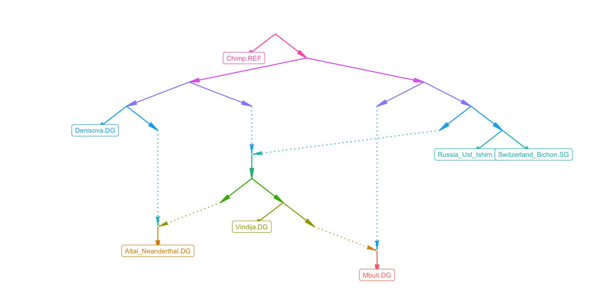

Admixture graphs
Robert Maier
2020-08-04
graphs.RmdUnder construction
ADMIXTOOLS 2 makes it easy to work with admixture graphs. It allows you to read and write them in a number of different formats, create them from scratch, and modify them in several ways. You can either modify them manually, one edge or one node at a time, or automatically, by generating all possible variations of a certain type (for example all graphs that result from adding one admixture edge to the current graph).
The purpose of all this is to find well fitting models, and to find out which models are not compatible with the data. This is further simplified by find_graphs(), a function which automatically finds well fitting graphs by repeatedly selecting the best among a set of randomly modified graphs. ADMIXTOOLS 2 also introduces a method for testing whether one admixture graph fits the data significantly better than another.
Graph formats
ADMIXTOOLS 2 can read and write graphs in a number of different formats, including the format used by the original ADMIXTOOLS software and DOT format, but internally it uses only the following two representations of admixture graphs:
- An edge list
- This is either a matrix or a data frame where each edge is in a different row. The first column (
from) contains the names of the source nodes, and the second column (to) contains the names of the target nodes. No distinction is made between admixture edges and drift edges, or between different types of nodes. Optionally, there are two more columns (lowerandupper), which put constraints on the length of an edge. For admixture edges, these constraints should be between 0 and 1, and for drift edges they can range from 0 to infinity. No constraints are indicated byNA.
- An
igraphgraph object
- This format is used for most operations that modify graphs, since the igraph package provides many useful functions for working with graphs. If not otherwise specified, functions that take graphs as input expect a graph in this format.
To convert an admixture graph from one of these representations to the other, you can use the igraph function igraph::graph_from_edgelist() and igraph::as_edgelist().
Simplified graphs
If you look at an admixture graph, you will probably notice that admixture edges originate at nodes which have no other outgoing edges. Many functions in ADMIXTOOLS 2 use simplified admixture graphs without those redundant nodes. While these nodes are redundant for the topology of a graph, they are still useful because they allow us to specify both admixture weights and drift weights for two merging branches.
simplify_graph() and desimplify_graph() can turn one representation into the other.
Creating admixture graphs
To get started, you can either read an existing graph (using parse_qpgraph_graphfile() if it’s in the orginial ADMIXTOOLS format, read_table2() if it’s an edge list, or readRDS() if it was saved in R using saveRDS()), or you can make a new one.
newgraph = tibble(from = c('R', 'R', 'p1', 'p1'), to = c('p1', 'p2', 'p3', 'p4'))
plotly_graph(newgraph)You can also generate random graphs with your choice of population labels and a set number of admixture events:
Modifying admixture graphs
Admixture graphs can be modified using the following functions:
insert_edge(example_igraph, from = "N2N1|Vindija.DG", to = "N3N1|Denisova.DG")
delete_admix(example_igraph, from = "N2N2", to = "N2N4")
insert_leaf(example_igraph, "newpop", from = "N4N", to = "Switzerland_Bichon.SG")
delete_leaf(example_igraph, "Switzerland_Bichon.SG")But it’s probably easier to modify a graph interactively using the ADMIXTOOLS 2 GUI.
Below you can see how a new admixture edge is added to a graph:

app demo
Rather than modifying admixture graphs manually and only testing a small number of models, you can start with a graph and let ADMIXTOOLS 2 generate and evaluate graphs for you.
The following functions take a graph and return lists of new, similar graphs:
newgraphs = graph_plusone(example_graph)
newgraphs = graph_minusone(example_graph)
newgraphs = graph_minusplus(example_graph)
newgraphs = graph_flipadmix(example_graph)
newgraphs = graph_splittrees(example_graph)To evaluate the new graphs, type:
newgraphs %>%
rowwise %>%
mutate(res = list(qpgraph(example_f2_blocks, graph))) %>%
unnest_wider(res) %>%
arrange(score)or, if you want to parallelize this,
newgraphs %>%
mutate(res = furrr::future_map(graph, ~qpgraph(example_f2_blocks, .))) %>%
unnest_wider(res) %>%
arrange(score)## # A tibble: 8 x 7
## name graph edges score f2 f3 ppinv
## <int> <list> <list> <dbl> <list> <list> <list>
## 1 6 <igrap… <tibble [12 … 1.97e4 <tibble [21 … <tibble [21… <dbl[,21] [21…
## 2 8 <igrap… <tibble [12 … 1.97e4 <tibble [21 … <tibble [21… <dbl[,21] [21…
## 3 2 <igrap… <tibble [12 … 2.70e4 <tibble [21 … <tibble [21… <dbl[,21] [21…
## 4 1 <igrap… <tibble [12 … 1.18e7 <tibble [21 … <tibble [21… <dbl[,21] [21…
## 5 5 <igrap… <tibble [12 … 1.57e7 <tibble [21 … <tibble [21… <dbl[,21] [21…
## 6 7 <igrap… <tibble [12 … 1.57e7 <tibble [21 … <tibble [21… <dbl[,21] [21…
## 7 3 <igrap… <tibble [12 … 1.65e7 <tibble [21 … <tibble [21… <dbl[,21] [21…
## 8 4 <igrap… <tibble [12 … 1.71e7 <tibble [21 … <tibble [21… <dbl[,21] [21…Automatic graph optimization
Another advantage of being able to quickly evaluate a single model using precomputed f-statistics is that we can evaluate many different graphs in order to find graph topologies with good fits.
The function find_graphs generates and evaluates numgraphs admixture graphs in numgen iterations across numrep independent repeats to find well fitting admixture graphs.
opt_results = find_graphs(my_f2_dir, pops, outpop = pops[1], numrep = 200,
numgraphs = 100, numgen = 20, numsel = 5, numadmix = 3)Once that is done, the following commands will extract the best fitting model overall, and the best fitting model from each independent repeat.
winner = opt_results %>% top_n(1, -jitter(score))
winners = opt_results %>% group_by(run) %>% top_n(1, -jitter(score)) %>% ungroup## [1] 4.009599
Comparing the fits of different graphs
If we have two different graphs for the same set of populations and the second graph has a better likelihood score than the first one, it suggests that the second graph is a better representation of the actual demographic history. That’s generally true, but there are two complications:
If the second graph is more complex (i.e. if it has more admixture events), it has more degrees of freedom and thus an unfair advantage over the first one. It might get a better score even if the simpler graph is closer to the true demographic history.
It is possible that the difference in scores is due to chance, and not because one of the two models really fits the data better. What if we had picked different samples from each population? Or what if we had picked different SNPs? Would the second model still be preferred over the first one?
ADMIXTOOLS 2 solves the first problem by computing out-of-sample scores, and the second problem by computing the fit of a graph using bootstrap-resampled SNP blocks.
Out-of-sample scores
qpGraph likelihood scores \(S\) are computed by comparing estimated f3-statistics \(g\) to fitted f3-statistics \(f\) - those that we would expect to observe under a given admixture graph. The difference between estimated and fitted f3-statistics, the residuals, are adjusted by the inverse covariance matrix of f3-statistics \(Q\), to get the likelihood score. If this covariance matrix was the identity matrix, the scores would just be the squared sum of residuals.
\[S = -\frac{1}{2} (g - f)' Q^{-1} (g - f)\]
Under this definition likelihood scores are actually negative, but usually the minus sign is dropped and positive scores are reported instead.
In fitting edge weights, qpGraph maximizes this likelihood score (bringing it closer to 0). To avoid overfitting, we can compute a new score after fitting the model, using SNPs (or SNP blocks) which haven’t been used for fitting the model:
\[S' = -\frac{1}{2} (g_{train} - f_{test})' Q^{-1} (g_{train} - f_{test})\]
These scores tend to be further away from zero, but they allow us to fairly compare models of different complexity to each other.
In ADMIXTOOLS 2, you can compute out-of-sample scores by providing the qpgraph() function with an f2_blocks_test argument.
nblocks = dim(example_f2_blocks)[3]
train = sample(1:nblocks, round(nblocks/2))
res = qpgraph(f2_blocks = example_f2_blocks[,,train], example_graph,
f2_blocks_test = example_f2_blocks[,,-train])
res$score## [1] 10065.92## [1] 9871.45Bootstrap-resampled graph fits
Out-of-sample scores allow us to get fair comparisons for any two admixture graphs, but they still don’t tell us whether a difference is significant. For that, we can use bootstrap resampling of SNP blocks: Each graph is evaluated many times on a random subset of SNP blocks. The variation among those scores tells us whether the scores of both graphs are significantly different from one another.
To combine this idea with out-of-sample scores to prevent overfitting, we can use the SNP blocks which were not selected in each bootstrap iteration as the out-of-sample SNP blocks.
The following example shows how to test whether graph1 gives a significantly better fit than graph2:
pops = dimnames(example_f2_blocks)[[1]]
graph1 = example_winners %>% arrange(score) %$% igraph[[1]]
graph2 = example_winners %>% arrange(score) %$% igraph[[100]]
fits = qpgraph_resample_multi(example_f2_blocks, list(graph1, graph2), nboot = 100)
compare_fits3(fits[[1]]$score_test, fits[[2]]$score_test)Summarizing graphs
All models are wrong, but some are useful. — George Box
All good models are alike; each bad model is bad in its own way. — Leo Tolstoy
For any set of populations there may be many graphs which can explain the data about equally well. Rather than declaring one of these models as the correct model, it may be more useful to find features that are shared between all models with good fits. The following function attempts to find such features by summarizing a set of graphs. It counts how often each population triple occurs in which configuration across all graphs.
## # A tibble: 1 x 14
## name1 name2 name3 numgraphs x13 x23 x31 x32 clade x12 x21 toptopo
## <chr> <chr> <chr> <int> <dbl> <dbl> <dbl> <dbl> <dbl> <dbl> <dbl> <chr>
## 1 Russ… Swit… Deni… 200 0.005 0.245 0.505 0.38 0.345 0.88 0.505 011111
## # … with 2 more variables: toptopocnt <int>, topos <list>The output for this population triple (1: Rus, 2: Swi, 3: Den) can be read like this:
-
numgraphs: 200 graphs were compared -
clade: In 34.5% of all graphsRusandSwiform a clade with respect toDen -
x13: In 0.5% of all graphsRusis closer toDenthanSwiis toDen, with ancestors ofRusadmixing intoDen -
x31: In 50.5% of all graphsRusis closer toDenthanSwiis toDen, with ancestors ofDenadmixing intoRus -
x23: In 24.5% of all graphsSwiis closer toDenthanRusis toDen, with ancestors ofSwiadmixing intoDen -
x32: In 38.0% of all graphsSwiis closer toDenthanRusis toDen, with ancestors ofDenadmixing intoSwi -
toptopo: The most common topology for this triple across all graphs.011111specifies a topology where conditionx13is not satisfied, but conditionsx23,x31,x32,x12, andx21are satisfied. A topology starting with0000is one where the first two populations form a clade. -
toptopocnt: The number of timestoptopowas observed -
topos: The number of times each topology was observed
Finding valid qpAdm models
Every admixture graph maps to a specific set of valid qpAdm models. The function qpadm_models lists all valid qpAdm models for a graph. Models which are contained within larger valid models are not shown. The number of valid qpAdm models can be very large for big graphs, so you should only run this on small graphs.

## # A tibble: 3 x 3
## target left right
## <chr> <chr> <chr>
## 1 Den Alt,Mbu Chi,Rus,Swi
## 2 Den Alt,Vin Chi,Rus,Swi
## 3 Den Mbu,Vin Chi,Rus,SwiThe only qpAdm models which are valid under this graph have Den as target and Chi, Rus, and Swi as right populations.
Valid qpAdm models need to satisfy the following criteria:
- There have to be more right populations than left populations
- The left populations should not form a clade with respect to any right population. This means that a qpgraph outgroup is not an informative right population, but it can be included anyway, with
add_outgroup. - Each set of left populations which forms a source for the target population has to form a clade with target at the exclusion of each right population. (Note: Check if that’s correct and if it can be stated in a better way.)